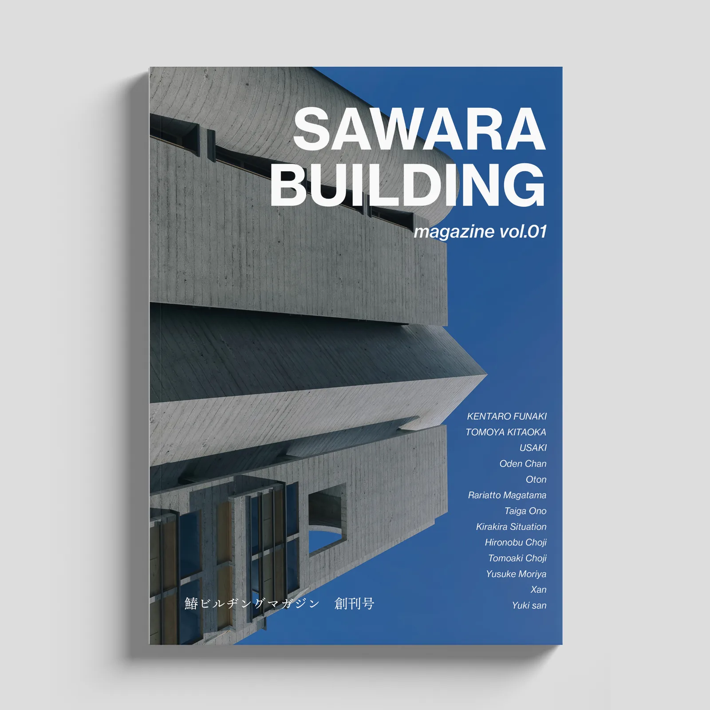
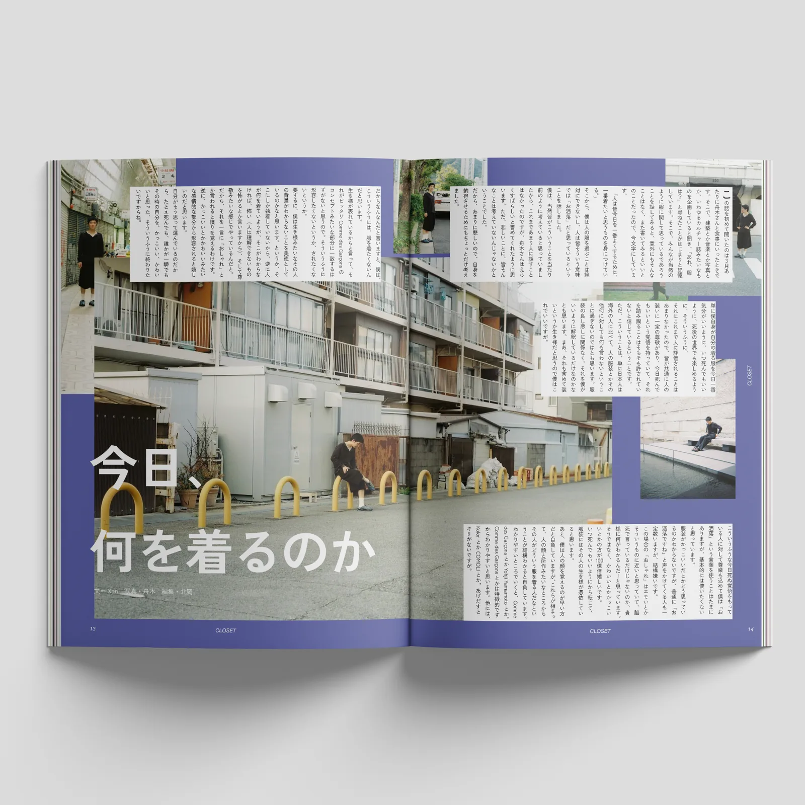
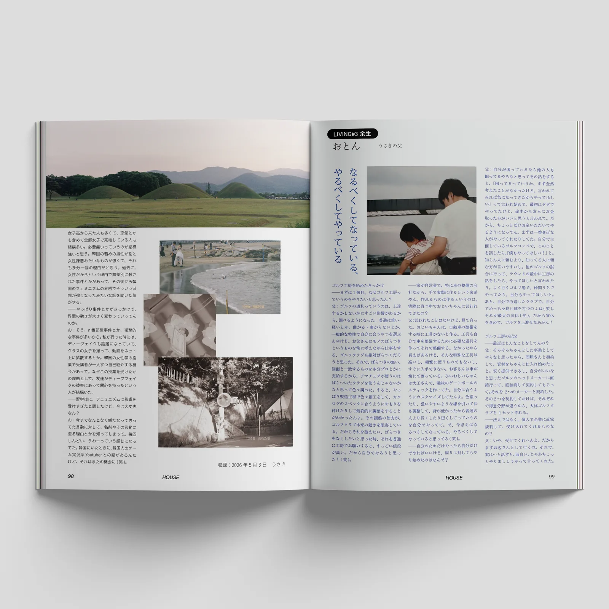
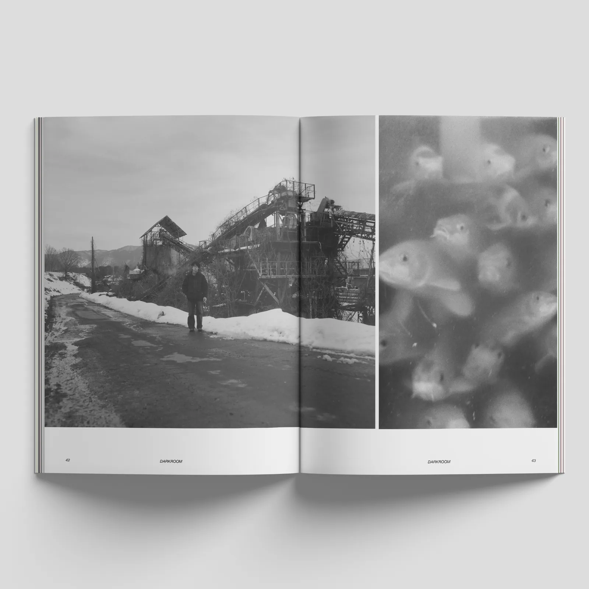
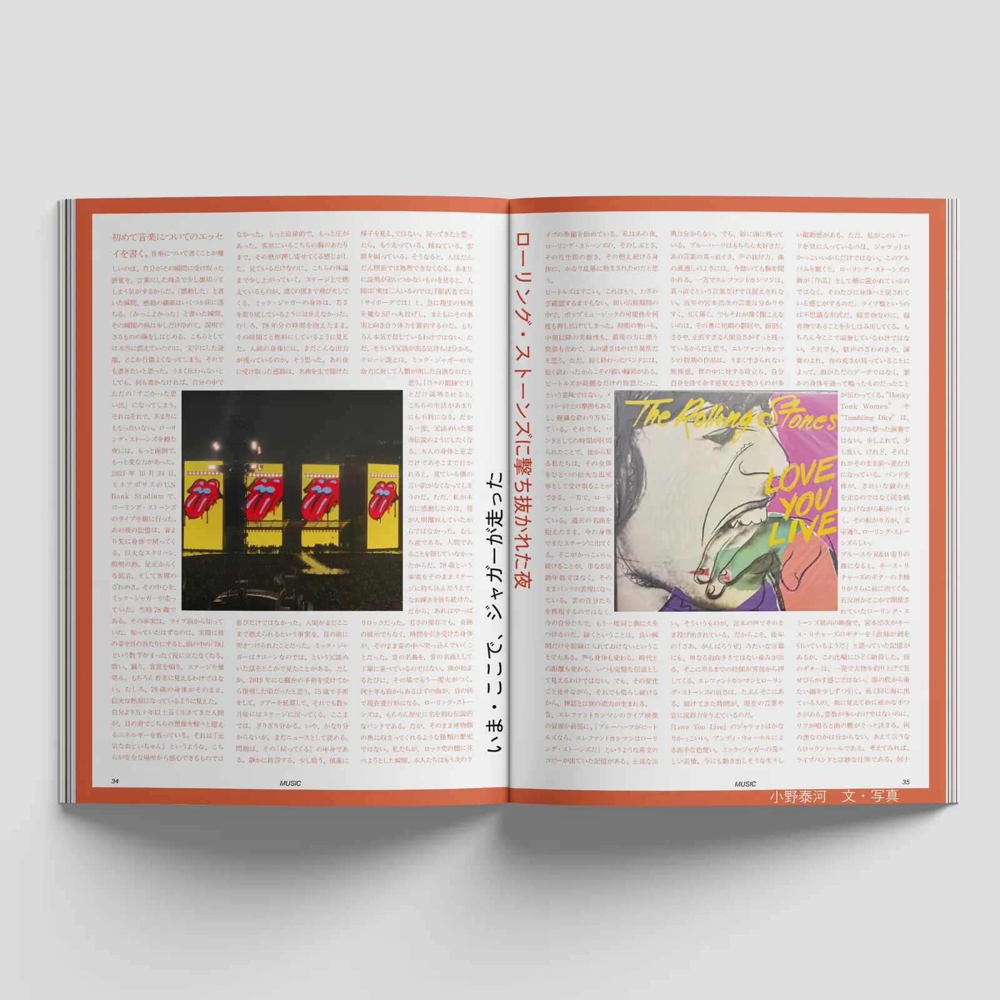
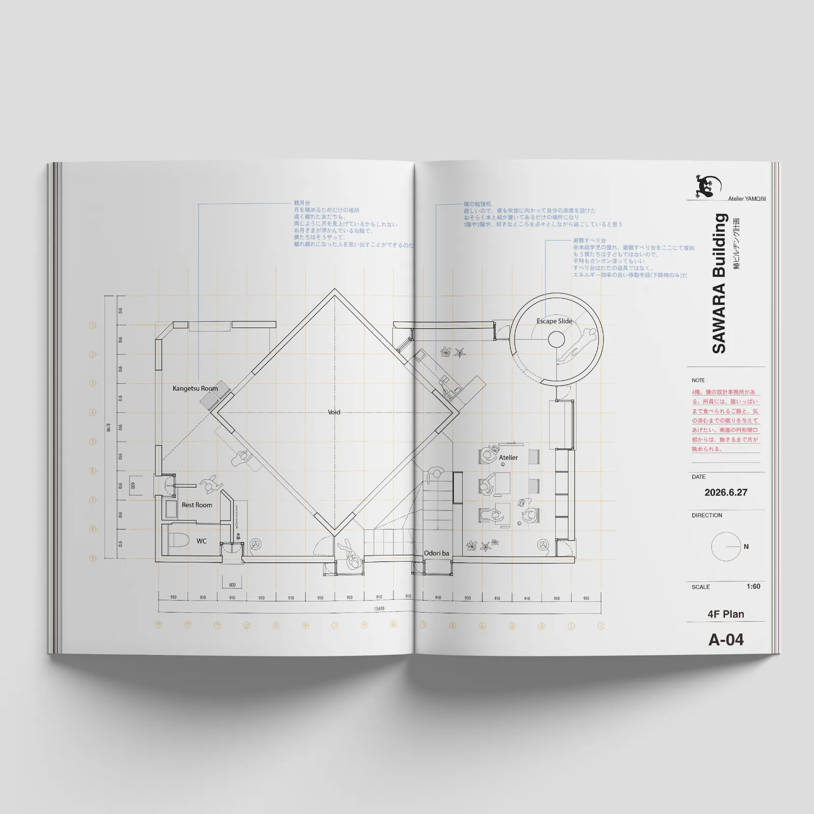
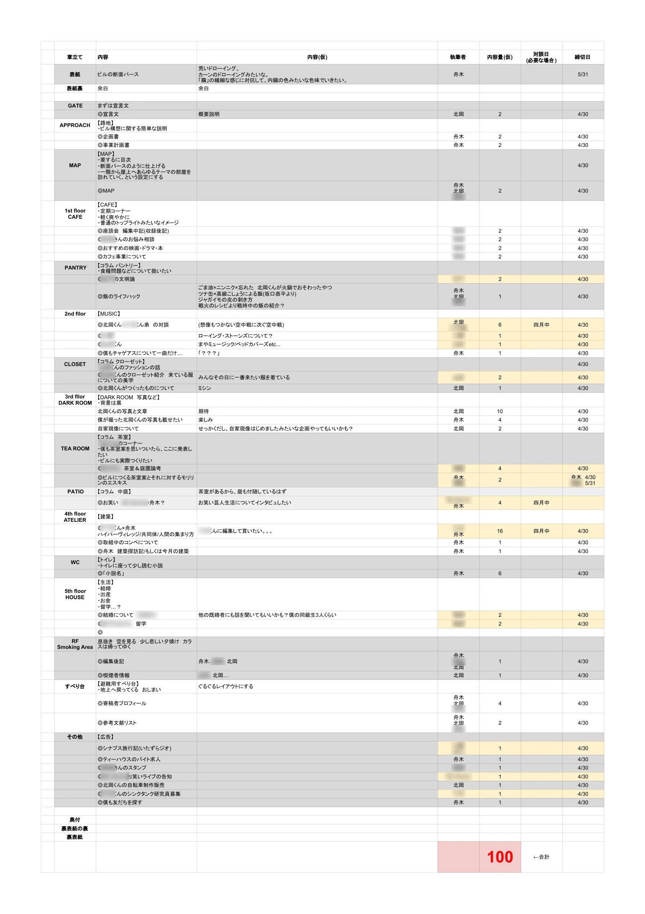

SAWARA BUILDING MAGAZINE #1 2026
創刊号。生きのびなければと思って、北岡くんと西浦さんにプレゼンして、鰆ビルをつくりませんかと提案した。
承認されたので、雑誌をひとまずつくった。色んな人と雑誌をつくること、コデックス装をやること、150部売ること。
ここら辺ができて、非常に満足である。僕と北岡くんはもうそんなに長くないかもしれないし、どうせなら死ぬ前にやりたいことをやっておこうという話で、このような無茶なスタイルになった。
コデックスは自分達で縫っているので、一向に終わる気配がないが、気を取り直して、また縫っていこう。
第二号はどうしようかな。
編集：舟木健太郎 北岡智也 うさき
執筆：舟木健太郎 北岡智也 うさき おでんちゃん おとん ラリアット勾玉 小野泰河 キラキラ環境 丁子紘亘 丁子友昭 森屋友佑 Xan ゆきさん
発行：鰆ビルヂング






